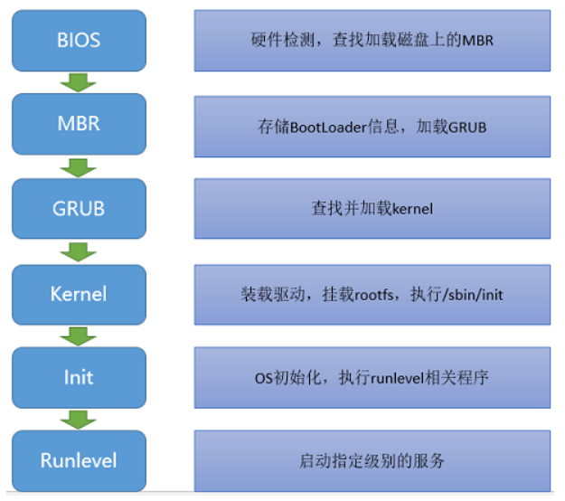
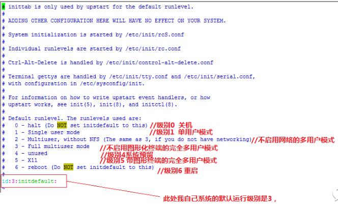

第四周作业-2022-6-29
背景
：报全程班和单就业的小伙伴，本周建议学习内容：第十五天、第十六天、第十七天 、第十八天。
请同学们完成作业后，将博客作业提交到此链接：https://www.wjx.top/vj/POHTQOH.aspx
章节内容
第十五天：进程和计划任务
1、shell脚本编程进阶符串切片和高级变量
2、Linux进程和内存管理
3、进程状态和相关概念
4、进程管理工具
5、性能相关工具
6、进程的前后执行和并发执行
7、任务计划管理”
第十六天：文本处理awk 内核管理
1、文本处理三剑客之awk基本用法
2、文本处理三剑客之awk基本用法
3、文本处理三剑客之awk高级用法
4、Linux启动流程和grub管理
5、Linux启动流程和服务管理
6、Linux的内核参数配置
7、systemd特性和内核编译安装”
第十七天：加密安全
1、systemd的服务service文件实现
2、target管理和grub2故障排错
3、安全机制和各种攻击方式实战
4、对称和非对称算法及单向哈希算法
5、加密综合应用及证书和CA
6、私有CA和openss配置文件详解
第十八天：加密安全2
1、实现私有CA和证书申请
2、证书管理和ssh服务工作原理
3、ssh客户端使用
4、ssh基于key验证
5、ssh高级用法及自动运维工具
6、sudo进行权限委派
7、pam模块功能和常用模块”
作业：
1、自定义写出10个定时任务的示例：
比如每周三凌晨三点执行data命令
要求尽量的覆盖各种场景
（1）每天8点对系统所有磁盘分区的磁盘使用率进行一次巡检，如有大于80%的，则立即发送告警邮件。
1 | |
（2）因为查看业务软件日志对故障进行分析时，希望日志里显示的就是当时的实际时间，所以需要每周进行一次时钟同步，以保证时间的准确性。
1 | |
（3）每周五23：50自动备份zookeeper的日志到/bak目录下 ，并以日期命名；
1 | |
(4) 一般都是周六进行检修，周三可能就做一些检修的准备工作，备份配置文件就是准备工作之一，可制定每周二8：30进行备份。
1 | |
（5）每15分钟进行一次计算机资源监测，包括内存使用率、cpu使用率
1 | |
（6）
（7）
（8）
（9）
（10）
2、图文并茂说明Linux进程和内存概念
内存：
内存是计算机中重要的部件之一， 由内存芯片、电路板、金手指等部分组成，它是与CPU进行沟通的桥梁。
内存(Memory)也被称为内存储器，其作用是用于暂时存放CPU中的运算数据，以及与硬盘等外部存储器交换的数据。
计算机中所有程序的运行都是在内存中进行的，因此内存的性能对计算机的影响非常大。
只要计算机在运行中，CPU就会把需要运算的数据调到内存中进行运算，当运算完成后CPU再将结果传送出来，内存的运行也决定了计算机的稳定运行。
进程：
进程是一个正在执行的程序；计算机中正在运行的程序实例；可以分配给处理器并由处理器执行的一个实体；由单一顺序的执行显示，一个当前状态和一组相关的系统资源所描述的活动单元。
3、图文并茂说明Linux启动流程
操作系统的启动分为两个阶段：引导boot和启动startup。
引导阶段开始于打开电源开关，结束于内核初始化完成和 systemd 进程成功运行。
启动阶段接管了剩余工作，直到操作系统进入可操作状态。
linux系统的启动流程可以分为以下步骤： POST（加电自检）–>加载BIOS（Basic Input/Outpu System)–>确定启动设备（Boot sequence)、加载Boot Loader–>加载内核（kernel）初始化initrd–>运行/sbin/init初始化系统–>打印用户登录提示符

（1）POST开机自检
linux开机加电后，系统开始开机自检，该过程主要对计算机各种硬件设备进行检测，如CPU、内存、主板、硬盘、CMOS芯片等，如果出现致命故障则停机，并且由于初始化过程还没完成，所以不会出现任何提示信号；如果出现一般故障则会发出声音等提示信号，等待故障清除；若未出现故障，加电自检完成。
（2）开机自检完成，查找可启动设备，加载主引导目录（MBR)
开机自检完成后，CPU首先读取位于CMOS中的BIOS程序，按照BIOS中设定的启动次序（Boot Sequence)逐一查找可启动设备,找到可启动的设备后，去该设备的第一个扇区 中读取MBR，那么MBR是什么哪？它又有什么作用哪？ MBR存在于可启动磁盘的0磁道0扇区，占用512字节，它主要用来告诉计算机从选定的可启动设备的哪个分区来加载引导加载程序（Boot loader)。
MBR中存在如下内容： 1、 Boot Loader 占用446字节，存储有操作系统（OS）相关信息，如操作系统名称，操作系统内核位置等，它的主要功能是加载内核到内存中运行。 2、 Partition Table 分区表，占用64字节，每个主分区占用16字节（这就是为啥一块硬盘只能有4个主分区啦^_^） 3、分区表有效性标记占用2字节 CPU将MBR读取至内存，运行GRUB(Boot Loader常用的有GRUB和LILO两种，现在常用的是GRUB），GRUB会把内核加载到内存去执行。
（3）加载内核，初始化initrd
GRUB把内核加载到内存后展开并运行， 此时GRUB的任务已经完成，接下来内核将会接管并完成 探测硬件–>加载驱动–>挂载根文件系统–>切换至根文件系统（rootfs）–>运行/sbin/init完成系统初始化。GRUB在加载内核同时，也把initrd加载到内存中并运行。
（4）运行/sbin/init，进行系统初始化
内核并加载进内存运行并以读写方式挂载完根文件系统后，执行第一个用户进程init，init首先运行/etc/init/rcS.conf脚本， init执行完/etc/rc.d/rc.sysinit后，将会执行/etc/inittab来设定系统运行的默认级别： linux中共有[0-6]七个运行级别，而我自己系统的默认运行级别是3.

（5）打印登录提示符** 系统初始化完成后，init给出用户登 录提示符（login）或者图形化登录界面，用户输入用户和密码登陆后，系统会为用户分配一个用户ID（uid）和组ID（gid），这两个ID是用户的 身份标识，用于检测用户运行程序时的身份验证。登录成功后，整个系统启动流程运行完毕！
4、自定义一个systemd服务
定时去其他服务器上检查/tmp/下文件的个数，如果发现数量有变化就记录变化情况到文件中。
5、写Linux内核编译安装博客
6、总结5个自我觉得比较有用的awk的使用场景，
比如在什么情况下用awk处理文本效率最高，发散题，至少写1个。”
(1) 计算VSZ和RSS各自的和 并以M单位显示。 VSZ 表示进程分配的虚拟内存。RSS 是常驻内存集（Resident Set Size），表示该进程分配的内存大小。
1 | |
（2） 统计系统中管理员、系统用户、普通用户的数量
1 | |
本博客所有文章除特别声明外，均采用 CC BY-SA 4.0 协议 ，转载请注明出处！